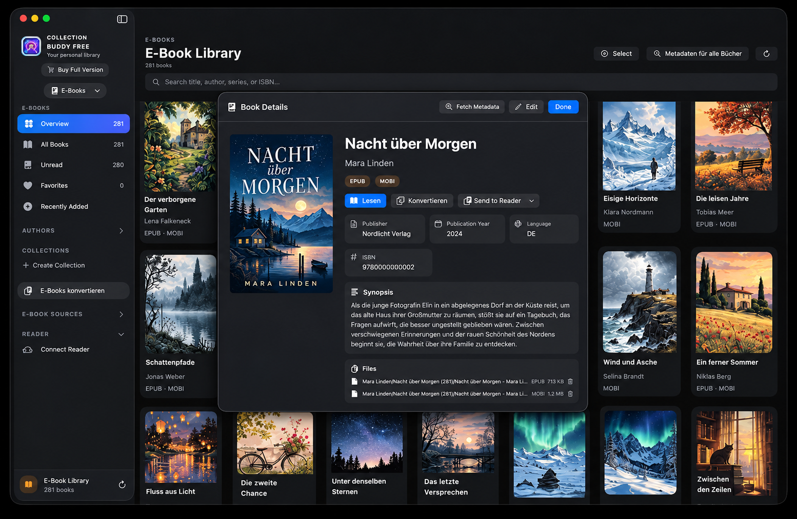
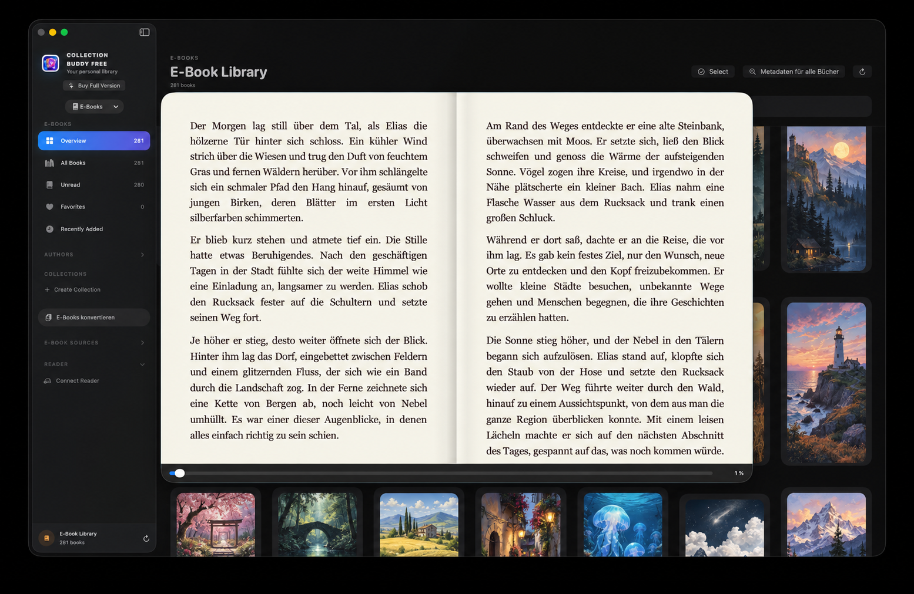
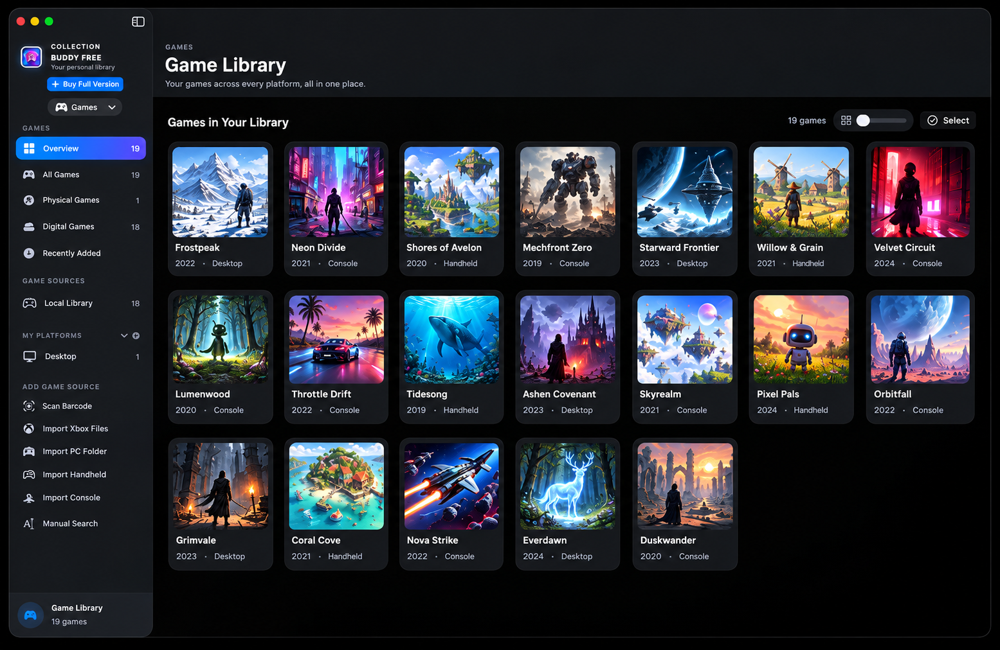

Flexible Quellen
Lokale Ordner, externe Laufwerke, im Finder eingebundene Netzwerkfreigaben und eigene Plex-, Jellyfin- oder Emby-Server.
Die All-in-one-Mediathek für den Mac
Filme, Serien, Hörbücher, E-Books und Spiele in einer App: Collection Buddy bringt eigene Dateien, Medienserver und persönliche Bibliotheken übersichtlich zusammen.


Eine Mediathek für alles
Collection Buddy katalogisiert Filme, Serien, Hörbücher, E-Books und Spiele, ohne deine ursprüngliche Ablage unnötig umzubauen. Quellen und Dateien bleiben nachvollziehbar, während die App alles in einer gemeinsamen Mediathek ordnet.
Für deine eigene Sammlung
Collection Buddy verbindet Quellen, Metadaten, Organisation und Wiedergabe in einer App.
Lokale Ordner, externe Laufwerke, im Finder eingebundene Netzwerkfreigaben und eigene Plex-, Jellyfin- oder Emby-Server.
Titel, Jahr, Beschreibung, Genres, Beteiligte, Bewertungen sowie Poster und Hintergründe – mit sichtbarer Prüfung bei unklaren Treffern.
Lokale und kompatible Serverinhalte direkt wiedergeben, Fortschritte sichern und Serien automatisch fortsetzen.
Autoren, Sprecher, Reihen und Kapitel übersichtlich verwalten und an der zuletzt gehörten Stelle fortsetzen.
E-Books lesen, zwischen unterstützten Formaten konvertieren und mit angeschlossenen Readern abgleichen.
Digitale und physische Spiele verschiedener Plattformen gemeinsam erfassen, ergänzen und filtern.
Ordner, Laufwerke, Medienserver und persönliche Kaufmediatheken lassen sich dort verbinden, wo sie bereits liegen. Collection Buddy führt die sichtbaren Informationen zusammen und zeigt neue Inhalte direkt im passenden Bereich.
Nach deiner ausdrücklichen macOS-Automation-Freigabe übernimmt Collection Buddy die sichtbaren Metadaten deiner persönlichen Apple-TV-Kaufmediathek. Die Titel erscheinen geordnet in deiner Sammlung; abgespielt werden sie weiterhin in der TV-App.
Nach deiner bewussten Anmeldung kann Collection Buddy sichtbare Einträge aus deiner persönlichen Prime-Video-Bibliothek einlesen. Einzelne Titel und Filmpakete lassen sich vor dem Import auswählen und anschließend direkt in der passenden Sammlung wiederfinden.
Der integrierte Streaming-Bereich bringt deine bevorzugten Dienste direkt in Collection Buddy. Anmeldung, Berechtigungsprüfung und Wiedergabe erfolgen weiterhin beim jeweiligen Anbieter.
Klare Treffer können direkt zugeordnet werden. Bei Mehrdeutigkeiten entscheidest du selbst – und deine Korrekturen behalten Vorrang.
Der integrierte Player ist für lokale Dateien und kompatible Inhalte eigener Medienserver gedacht. Streamingdienste werden im eingebauten Streaming-Bereich oder alternativ im Standardbrowser wiedergegeben.
DRM-freie Hörbücher und ganze Hörbuchordner erhalten eine eigene Mediathek – mit Reihen, Kapiteln und gespeichertem Hörfortschritt.
E-Books erhalten eine eigene Bibliothek mit Cover, Metadaten, Formaten und Lesefortschritt. Unterstützte Bücher lassen sich direkt öffnen, konvertieren und an angeschlossene Reader übertragen.


Collection Buddy führt digitale und physische Spiele von PlayStation, Xbox, Nintendo und Steam in einer übersichtlichen Bibliothek zusammen – mit Plattformen, Quellen und Spieldaten direkt am Titel.

Datenschutz mit klarer Grenze
Collection Buddy hat keine eigenen Nutzerkonten, keine Analysewerkzeuge und kein Werbetracking.
Server-Zugangsdaten und Profil-PINs werden im macOS-Schlüsselbund gespeichert.
Wiedergabe-, Lese- und Fortschrittsstände, Favoriten und Sammlungen werden nur nach deiner Aktivierung über dein persönliches iCloud-Konto synchronisiert.
Gespeicherte Websitedaten und Cookies lassen sich pro Dienst, nach Typ oder vollständig löschen.
Backups enthalten Organisation, Zuordnungen und Fortschritt – nicht deine Film-, Hörbuch-, E-Book- oder Spieldateien.
Ein App-Reset entfernt lokale App-Daten, Einstellungen, Schlüsselbunddaten, Cookies, Cache und synchronisierte App-Daten – nicht deine Medienordner.
Datenquellen & Open Source
Online-Abfragen erfolgen nur für die jeweils benötigten Such- und Zuordnungsfunktionen. Trailer- und Untertitelsuchen werden von dir ausgelöst.
Lokale NFO-Dateien und Bilder, Cinemeta/Stremio, TVmaze, omdb.org (CC BY 2.0 DE) und Wikidata.
Für Spielemetadaten: RAWG.
KinoCheck für von dir gestartete Trailersuchen sowie das OpenSubtitles-Community-Addon für von dir gestartete Untertitelsuchen.
EasyList und EasyPrivacy unter CC BY-SA 3.0 – optional und ausschließlich für von dir hinzugefügte Streaming-Websites.
VLCKit und libVLC, lizenziert unter der GNU LGPL 2.1.
Collection Buddy ist ein unabhängiges Produkt. Genannte Marken, Dienste und Logos gehören ihren jeweiligen Eigentümern. Eine Nennung bedeutet keine Partnerschaft oder Billigung.